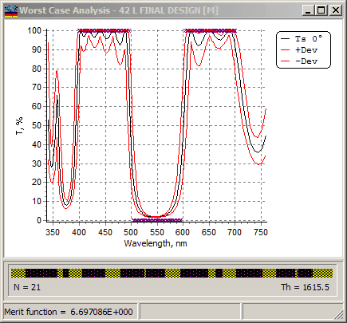

Worst Case Errors Evaluation
Worst Case Errors Evaluation
The Worst Case Analysis option calculates the largest variations of spectral characteristics assuming that layer parameters (thicknesses and refractive indices) can vary within certain limits defined in the Worst Case Setup.
The Worst Case Analysis can only be performed for one spectral characteristic at a time. You must specify the type of this characteristic (Transmittance, Reflectance, etc.), the state of polarization, and the angle of incidence before starting calculations (see Setting Worst Case Analysis Characteristics).
You can conduct the Worst Case Analysis for layer thickness errors and refractive index errors. In both cases, it is necessary to specify the maximum allowed parameter deviations in special setup windows.

After completing the evaluation procedure, the original (theoretical) spectral characteristic is displayed in the Worst Case Analysis window. Two additional curves plotted in this window indicate the corridor of the maximum possible deviations of the spectral characteristic from the theoretical curve when layer parameters are permitted to vary within the specified limits.
For more information on setting deviations and initiating the evaluation of Worst Case errors, refer to: